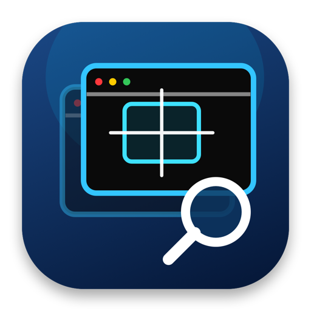

系统窗口树
从 Desktop 根节点浏览窗口，并继续展开目标应用公开的 Accessibility 元素。

MacSpyMacSpy 是一款原生 macOS 检查工具。通过 Quartz Window Services、 Accessibility 和 libproc，把系统对象关系、实时参数与公开事件集中在一个工作台中。
⌄ Desktop - System Windows
⌄ Outlook - Inbox
AXToolbar
AXSplitGroup
AXScrollArea "Messages"
⌄ MacSpy - UI Inspector
AXButton "Inspect on Screen"
14:24:08 AXFocusedUIElementChanged 14:24:08 AXUIElementGetPid → 8421 14:24:07 AXValueChanged
针对 macOS 公共能力设计，不伪造 Windows 消息模型。
从 Desktop 根节点浏览窗口，并继续展开目标应用公开的 Accessibility 元素。
移动鼠标即可高亮 Outlook 等应用的元素，并实时显示进程、角色、标题和坐标。
记录 MacSpy 检查目标时调用的 Apple 公共 API、参数与返回结果。
通过 AXObserver 展示焦点、窗口、标题、值、移动和缩放等公开通知。
macOS 不公开 Win32 的 HWND、WNDPROC 或跨进程 WM_* 消息。 MacSpy 只展示系统允许读取的真实数据。
克隆仓库后使用 Xcode 打开项目，选择 My Mac 并运行。
git clone https://github.com/tangzhiyin/MacSpy.git
cd MacSpy
open MacSpy.xcodeproj